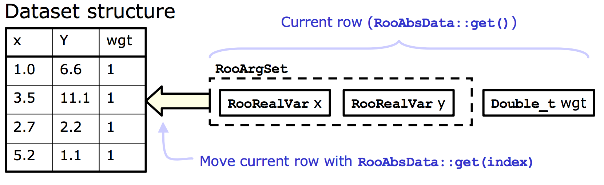
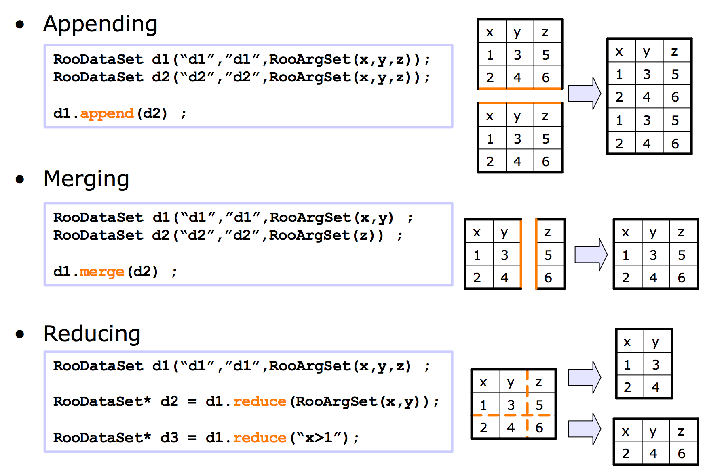

RooFit Basics
RooFit is a OO analysis environment built on ROOT. It has a collection of classes designed to augment root for data modeling.
This section covers a few of the basics of RooFit. There are many more tutorials available at this link: https://root.cern.ch/root/html600/tutorials/roofit/index.html
Objects
In RooFit, any variable, data point, function, PDF (etc.) is represented by a c++ object
The most basic of these is the RooRealVar. We will create one that will represent the mass of some hypothetical particle, we name it and give it an initial starting value and range.
RooRealVar MH("MH","mass of the Hypothetical Boson (H-boson) in GeV",125,120,130);
MH.Print();
RooRealVar::MH = 125 L(120 - 130)
Ok, great. This variable is now an object we can play around with. We can access this object and modify its properties, such as its value.
MH.setVal(130);
MH.getVal();
In particle detectors we typically do not observe this particle mass, but usually define some observable which is sensitive to this mass. We will assume we can detect and reconstruct the decay products of the H-boson and measure the invariant mass of those particles. We need to make another variable that represents that invariant mass.
RooRealVar mass("m","m (GeV)",100,80,200);
In the perfect world we would perfectly measure the exact mass of the particle in every single event. However, our detectors are usually far from perfect so there will be some resolution effect. We will assume the resolution of our measurement of the invariant mass is 10 GeV and call it "sigma"
RooRealVar sigma("resolution","#sigma",10,0,20);
More exotic variables can be constructed out of these RooRealVars using RooFormulaVars. For example, suppose we wanted to make a function out of the variables that represented the relative resolution as a function of the hypothetical mass MH.
RooFormulaVar func("R","@0/@1",RooArgList(sigma,mass));
func.Print("v");
Show
--- RooAbsArg ---
Value State: DIRTY
Shape State: DIRTY
Attributes:
Address: 0x10e878068
Clients:
Servers:
(0x10dcd47b0,V-) RooRealVar::resolution "#sigma"
(0x10dcd4278,V-) RooRealVar::m "m (GeV)"
Proxies:
actualVars ->
1) resolution
2) m
--- RooAbsReal ---
Plot label is "R"
--- RooFormula ---
Formula: "@0/@1"
(resolution,m)
Notice how there is a list of the variables we passed (the servers or "actual vars"). We can now plot the function. RooFit has a special plotting object RooPlot which keeps track of the objects (and their normalisations) that we want to draw. Since RooFit does not know the difference between objects that are and are not dependent, we need to tell it.
Right now, we have the relative resolution as \(R(m,\sigma)\), whereas we want to plot \(R(m,\sigma(m))\)!
TCanvas *can = new TCanvas();
//make the x-axis the "mass"
RooPlot *plot = mass.frame();
func.plotOn(plot);
plot->Draw();
can->Draw();

The main objects we are interested in using from RooFit are probability denisty functions or (PDFs). We can construct the PDF,
as a simple Gaussian shape for example or a RooGaussian in RooFit language (think McDonald's logic, everything is a RooSomethingOrOther)
RooGaussian gauss("gauss","f(m|M_{H},#sigma)",mass,MH,sigma);
gauss.Print("V");
Show
--- RooAbsArg ---
Value State: DIRTY
Shape State: DIRTY
Attributes:
Address: 0x10ecf4188
Clients:
Servers:
(0x10dcd4278,V-) RooRealVar::m "m (GeV)"
(0x10a08a9d8,V-) RooRealVar::MH "mass of the Hypothetical Boson (H-boson) in GeV"
(0x10dcd47b0,V-) RooRealVar::resolution "#sigma"
Proxies:
x -> m
mean -> MH
sigma -> resolution
--- RooAbsReal ---
Plot label is "gauss"
--- RooAbsPdf ---
Cached value = 0
Notice how the gaussian PDF, like the RooFormulaVar depends on our RooRealVar objects, these are its servers. Its evaluation will depend on their values.
The main difference between PDFs and Functions in RooFit is that PDFs are automatically normalised to unitiy, hence they represent a probability density, you don't need to normalise yourself. Lets plot it for the different values of \(m\).
plot = mass.frame();
gauss.plotOn(plot);
MH.setVal(120);
gauss.plotOn(plot,RooFit::LineColor(kBlue));
MH.setVal(125);
gauss.plotOn(plot,RooFit::LineColor(kRed));
MH.setVal(135);
gauss.plotOn(plot,RooFit::LineColor(kGreen));
plot->Draw();
can->Update();
can->Draw();

Note that as we change the value of MH, the PDF gets updated at the same time.
PDFs can be used to generate Monte Carlo data. One of the benefits of RooFit is that to do so only uses a single line of code! As before, we have to tell RooFit which variables to generate in (e.g which are the observables for an experiment). In this case, each of our events will be a single value of "mass" \(m\). The arguments for the function are the set of observables, follwed by the number of events,
RooDataSet *gen_data = (RooDataSet*) gauss.generate(RooArgSet(mass),500);
Now we can plot the data as with other RooFit objects.
plot = mass.frame();
gen_data->plotOn(plot);
gauss.plotOn(plot);
gauss.paramOn(plot);
plot->Draw();
can->Update();
can->Draw();

Of course we are not in the business of generating MC events, but collecting real data!. Next we will look at using real data in RooFit.
Datasets
A dataset is essentially just a collection of points in N-dimensional (N-observables) space. There are two basic implementations in RooFit,
1) an "unbinned" dataset - RooDataSet
2) a "binned" dataset - RooDataHist
both of these use the same basic structure as below

We will create an empty dataset where the only observable is the mass. Points can be added to the dataset one by one ...
RooDataSet mydata("dummy","My dummy dataset",RooArgSet(mass));
// We've made a dataset with one observable (mass)
mass.setVal(123.4);
mydata.add(RooArgSet(mass));
mass.setVal(145.2);
mydata.add(RooArgSet(mass));
mass.setVal(170.8);
mydata.add(RooArgSet(mass));
mydata.Print();
RooDataSet::dummy[m] = 3 entries
There are also other ways to manipulate datasets in this way as shown in the diagram below

Luckily there are also Constructors for a RooDataSet from a TTree and for a RooDataHist from a TH1 so its simple to convert from your usual ROOT objects.
We will take an example dataset put together already. The file tutorial.root can be downloaded here.
TFile *file = TFile::Open("tutorial.root");
file->ls();
Show file contents
TFile** tutorial.root
TFile* tutorial.root
KEY: RooWorkspace workspace;1 Tutorial Workspace
KEY: TProcessID ProcessID0;1 48737500-e7e5-11e6-be6f-0d0011acbeef
Inside the file, there is something called a RooWorkspace. This is just the RooFit way of keeping a persistent link between the objects for a model. It is a very useful way to share data and PDFs/functions etc among CMS collaborators.
We will now take a look at it. It contains a RooDataSet and one variable. This time we called our variable (or observable) CMS_hgg_mass, we will assume that this is the invariant mass of photon pairs where we assume our H-boson decays to photons.
RooWorkspace *wspace = (RooWorkspace*) file->Get("workspace");
wspace->Print("v");
Show
RooWorkspace(workspace) Tutorial Workspace contents
variables
---------
(CMS_hgg_mass)
datasets
--------
RooDataSet::dataset(CMS_hgg_mass)
Now we will have a look at the data. The RooWorkspace has several accessor functions, we will use the RooWorkspace::data one.
There are also RooWorkspace::var, RooWorkspace::function and RooWorkspace::pdf with (hopefully) obvious purposes.
RooDataSet *hgg_data = (RooDataSet*) wspace->data("dataset");
RooRealVar *hgg_mass = (RooRealVar*) wspace->var("CMS_hgg_mass");
plot = hgg_mass->frame();
hgg_data->plotOn(plot,RooFit::Binning(160));
// Here we've picked a certain number of bins just for plotting purposes
TCanvas *hggcan = new TCanvas();
plot->Draw();
hggcan->Update();
hggcan->Draw();
{kind=link}
Likelihoods and Fitting to data
The data we have in our file does not look like a Gaussian distribution. Instead, we could probably use something like an exponential to describe it.
There is an exponential PDF already in RooFit (yes, you guessed it) RooExponential. For a PDF, we only need one parameter which is the exponential slope \(\alpha\) so our pdf is,
Where of course, \(N = \int_{110}^{150} e^{-\alpha m} dm\) is the normalisation constant.
You can find several available RooFit functions here: https://root.cern.ch/root/html/ROOFIT_ROOFIT_Index.html
There is also support for a generic PDF in the form of a RooGenericPdf, check this link: https://root.cern.ch/doc/v608/classRooGenericPdf.html
Now we will create an exponential PDF for our background,
RooRealVar alpha("alpha","#alpha",-0.05,-0.2,0.01);
RooExponential expo("exp","exponential function",*hgg_mass,alpha);
We can use RooFit to tell us to estimate the value of \(\alpha\) using this dataset. You will learn more about parameter estimation, but for now we will just assume you know about maximizing likelihoods. This maximum likelihood estimator is common in HEP and is known to give unbiased estimates for things like distribution means etc.
This also introduces the other main use of PDFs in RooFit. They can be used to construct likelihoods easily.
The likelihood \(\mathcal{L}\) is defined for a particluar dataset (and model) as being proportional to the probability to observe the data assuming some pdf. For our data, the probability to observe an event with a value in an interval bounded by a and b is given by,
As that interval shrinks we can say this probability just becomes equal to \(f(m|\alpha)dm\).
The probability to observe the dataset we have is given by the product of such probabilities for each of our data points, so that
Note that for a specific dataset, the \(dm\) factors which should be there are constnant. They can therefore be absorbed into the constant of proportionality!
The maximum likelihood esitmator for \(\alpha\), usually written as \(\hat{\alpha}\), is found by maximising \(\mathcal{L}(\alpha)\).
Note that this will not depend on the value of the constant of proportionality so we can ignore it. This is true in most scenarios because usually only the ratio of likelihoods is needed, in which the constant factors out.
Obviously this multiplication of exponentials can lead to very large (or very small) numbers which can lead to numerical instabilities. To avoid this, we can take logs of the likelihood. Its also common to multiply this by -1 and minimize the resulting Negative Log Likelihood : \(\mathrm{-Log}\mathcal{L}(\alpha)\).
RooFit can construct the NLL for us.
RooNLLVar *nll = (RooNLLVar*) expo.createNLL(*hgg_data);
nll->Print("v");
Show
--- RooAbsArg ---
Value State: DIRTY
Shape State: DIRTY
Attributes:
Address: 0x7fdddbe46200
Clients:
Servers:
(0x11eab5638,V-) RooRealVar::alpha "#alpha"
Proxies:
paramSet ->
1) alpha
--- RooAbsReal ---
Plot label is "nll_exp_dataset"
Notice that the NLL object knows which RooRealVar is the parameter because it doesn't find that one in the dataset. This is how RooFit distiguishes between observables and parameters.
RooFit has an interface to Minuit via the RooMinimizer class which takes the NLL as an argument. To minimize, we just call the RooMinimizer::minimize() function. Minuit2 is the program and migrad is the minimization routine which uses gradient descent.
RooMinimizer minim(*nll);
minim.minimize("Minuit2","migrad");
Show
**********
** 1 **SET PRINT 1
**********
**********
** 2 **SET NOGRAD
**********
PARAMETER DEFINITIONS:
NO. NAME VALUE STEP SIZE LIMITS
1 alpha -5.00000e-02 2.10000e-02 -2.00000e-01 1.00000e-02
**********
** 3 **SET ERR 0.5
**********
**********
** 4 **SET PRINT 1
**********
**********
** 5 **SET STR 1
**********
NOW USING STRATEGY 1: TRY TO BALANCE SPEED AGAINST RELIABILITY
**********
** 6 **MIGRAD 500 1
**********
FIRST CALL TO USER FUNCTION AT NEW START POINT, WITH IFLAG=4.
START MIGRAD MINIMIZATION. STRATEGY 1. CONVERGENCE WHEN EDM .LT. 1.00e-03
FCN=3589.52 FROM MIGRAD STATUS=INITIATE 4 CALLS 5 TOTAL
EDM= unknown STRATEGY= 1 NO ERROR MATRIX
EXT PARAMETER CURRENT GUESS STEP FIRST
NO. NAME VALUE ERROR SIZE DERIVATIVE
1 alpha -5.00000e-02 2.10000e-02 2.24553e-01 -9.91191e+01
ERR DEF= 0.5
MIGRAD MINIMIZATION HAS CONVERGED.
MIGRAD WILL VERIFY CONVERGENCE AND ERROR MATRIX.
COVARIANCE MATRIX CALCULATED SUCCESSFULLY
FCN=3584.68 FROM MIGRAD STATUS=CONVERGED 18 CALLS 19 TOTAL
EDM=1.4449e-08 STRATEGY= 1 ERROR MATRIX ACCURATE
EXT PARAMETER STEP FIRST
NO. NAME VALUE ERROR SIZE DERIVATIVE
1 alpha -4.08262e-02 2.91959e-03 1.33905e-03 -3.70254e-03
ERR DEF= 0.5
EXTERNAL ERROR MATRIX. NDIM= 25 NPAR= 1 ERR DEF=0.5
8.527e-06
RooFit has found the best fit value of alpha for this dataset. It also estimates an uncertainty on alpha using the Hessian matrix from the fit.
alpha.Print("v");
--- RooAbsArg ---
Value State: clean
Shape State: clean
Attributes:
Address: 0x11eab5638
Clients:
(0x11eab5978,V-) RooExponential::exp "exponential function"
(0x7fdddbe46200,V-) RooNLLVar::nll_exp_dataset "-log(likelihood)"
(0x7fdddbe95600,V-) RooExponential::exp "exponential function"
(0x7fdddbe5a400,V-) RooRealIntegral::exp_Int[CMS_hgg_mass] "Integral of exponential function"
Servers:
Proxies:
--- RooAbsReal ---
Plot label is "alpha"
--- RooAbsRealLValue ---
Fit range is [ -0.2 , 0.01 ]
--- RooRealVar ---
Error = 0.00291959
We will plot the resulting exponential on top of the data. Notice that the value of \(\hat{\alpha}\) is used for the exponential.
expo.plotOn(plot);
expo.paramOn(plot);
plot->Draw();
hggcan->Update();
hggcan->Draw();

It looks like there could be a small region near 125 GeV for which our fit does not quite go through the points. Maybe our hypothetical H-boson is not so hypothetical after all!
We will now see what happens if we include some resonant signal into the fit. We can take our Gaussian function again and use that as a signal model. A reasonable value for the resolution of a resonant signal with a mass around 125 GeV decaying to a pair of photons is around a GeV.
sigma.setVal(1.);
sigma.setConstant();
MH.setVal(125);
MH.setConstant();
RooGaussian hgg_signal("signal","Gaussian PDF",*hgg_mass,MH,sigma);
By setting these parameters constant, RooFit knows (either when creating the NLL by hand or when using fitTo) that there is not need to fit for these parameters.
We need to add this to our exponential model and fit a "Sigmal+Background model" by creating a RooAddPdf. In RooFit there are two ways to add PDFs, recursively where the fraction of yields for the signal and background is a parameter or absolutely where each PDF has its own normalization. We're going to use the second one.
RooRealVar norm_s("norm_s","N_{s}",10,100);
RooRealVar norm_b("norm_b","N_{b}",0,1000);
const RooArgList components(hgg_signal,expo);
const RooArgList coeffs(norm_s,norm_b);
RooAddPdf model("model","f_{s+b}",components,coeffs);
model.Print("v");
Show
--- RooAbsArg ---
Value State: DIRTY
Shape State: DIRTY
Attributes:
Address: 0x11ed5d7a8
Clients:
Servers:
(0x11ed5a0f0,V-) RooGaussian::signal "Gaussian PDF"
(0x11ed5d058,V-) RooRealVar::norm_s "N_{s}"
(0x11eab5978,V-) RooExponential::exp "exponential function"
(0x11ed5d398,V-) RooRealVar::norm_b "N_{b}"
Proxies:
!refCoefNorm ->
!pdfs ->
1) signal
2) exp
!coefficients ->
1) norm_s
2) norm_b
--- RooAbsReal ---
Plot label is "model"
--- RooAbsPdf ---
Cached value = 0
Ok, now we will fit the model. Note this time we add the option Extended(), which tells RooFit that we care about the overall number of observed events in the data \(n\) too. It will add an additional Poisson term in the likelihood to account for this so our likelihood this time looks like,
where \(c = \dfrac{ N_{s} }{ N_{s} + N_{b} }\), \(f_{s}(m|M_{H},\sigma)\) is the Gaussian signal pdf and \(f_{b}(m|\alpha)\) is the exponential pdf. Remember that \(M_{H}\) and \(\sigma\) are fixed so that they are no longer parameters of the likelihood.
There is a simpler interface for maximum-likelihood fits which is the RooAbsPdf::fitTo method. With this simple method, RooFit will construct the negative log-likelihood function, from the pdf, and minimize all of the free parameters in one step.
model.fitTo(*hgg_data,RooFit::Extended());
model.plotOn(plot,RooFit::Components("exp"),RooFit::LineColor(kGreen));
model.plotOn(plot,RooFit::LineColor(kRed));
model.paramOn(plot);
hggcan->Clear();
plot->Draw();
hggcan->Update();
hggcan->Draw();

What about if we also fit for the mass (\(M_{H}\))? we can easily do this by removing the constant setting on MH.
MH.setConstant(false);
model.fitTo(*hgg_data,RooFit::Extended());
Show output
[#1] INFO:Minization -- RooMinimizer::optimizeConst: activating const optimization
[#1] INFO:Minization -- The following expressions will be evaluated in cache-and-track mode: (signal,exp)
**********
** 1 **SET PRINT 1
**********
**********
** 2 **SET NOGRAD
**********
PARAMETER DEFINITIONS:
NO. NAME VALUE STEP SIZE LIMITS
1 MH 1.25000e+02 1.00000e+00 1.20000e+02 1.30000e+02
2 alpha -4.08793e-02 2.96856e-03 -2.00000e-01 1.00000e-02
3 norm_b 9.67647e+02 3.25747e+01 0.00000e+00 1.00000e+03
MINUIT WARNING IN PARAMETR
============== VARIABLE3 BROUGHT BACK INSIDE LIMITS.
4 norm_s 3.22534e+01 1.16433e+01 1.00000e+01 1.00000e+02
**********
** 3 **SET ERR 0.5
**********
**********
** 4 **SET PRINT 1
**********
**********
** 5 **SET STR 1
**********
NOW USING STRATEGY 1: TRY TO BALANCE SPEED AGAINST RELIABILITY
**********
** 6 **MIGRAD 2000 1
**********
FIRST CALL TO USER FUNCTION AT NEW START POINT, WITH IFLAG=4.
START MIGRAD MINIMIZATION. STRATEGY 1. CONVERGENCE WHEN EDM .LT. 1.00e-03
FCN=-2327.53 FROM MIGRAD STATUS=INITIATE 10 CALLS 11 TOTAL
EDM= unknown STRATEGY= 1 NO ERROR MATRIX
EXT PARAMETER CURRENT GUESS STEP FIRST
NO. NAME VALUE ERROR SIZE DERIVATIVE
1 MH 1.25000e+02 1.00000e+00 2.01358e-01 1.12769e+01
2 alpha -4.08793e-02 2.96856e-03 3.30048e-02 -1.22651e-01
3 norm_b 9.67647e+02 3.25747e+01 2.56674e-01 -1.96463e-02
4 norm_s 3.22534e+01 1.16433e+01 3.10258e-01 -8.97036e-04
ERR DEF= 0.5
MIGRAD MINIMIZATION HAS CONVERGED.
MIGRAD WILL VERIFY CONVERGENCE AND ERROR MATRIX.
COVARIANCE MATRIX CALCULATED SUCCESSFULLY
FCN=-2327.96 FROM MIGRAD STATUS=CONVERGED 65 CALLS 66 TOTAL
EDM=1.19174e-05 STRATEGY= 1 ERROR MATRIX ACCURATE
EXT PARAMETER STEP FIRST
NO. NAME VALUE ERROR SIZE DERIVATIVE
1 MH 1.24628e+02 3.98153e-01 2.66539e-03 2.46327e-02
2 alpha -4.07708e-02 2.97195e-03 1.10093e-03 8.33780e-02
3 norm_b 9.66105e+02 3.25772e+01 5.96627e-03 1.83523e-03
4 norm_s 3.39026e+01 1.17380e+01 9.60816e-03 -2.32681e-03
ERR DEF= 0.5
EXTERNAL ERROR MATRIX. NDIM= 25 NPAR= 4 ERR DEF=0.5
1.589e-01 -3.890e-05 1.462e-01 -1.477e-01
-3.890e-05 8.836e-06 -2.020e-04 2.038e-04
1.462e-01 -2.020e-04 1.073e+03 -1.072e+02
-1.477e-01 2.038e-04 -1.072e+02 1.420e+02
PARAMETER CORRELATION COEFFICIENTS
NO. GLOBAL 1 2 3 4
1 0.04518 1.000 -0.033 0.011 -0.031
2 0.03317 -0.033 1.000 -0.002 0.006
3 0.27465 0.011 -0.002 1.000 -0.275
4 0.27610 -0.031 0.006 -0.275 1.000
**********
** 7 **SET ERR 0.5
**********
**********
** 8 **SET PRINT 1
**********
**********
** 9 **HESSE 2000
**********
COVARIANCE MATRIX CALCULATED SUCCESSFULLY
FCN=-2327.96 FROM HESSE STATUS=OK 23 CALLS 89 TOTAL
EDM=1.19078e-05 STRATEGY= 1 ERROR MATRIX ACCURATE
EXT PARAMETER INTERNAL INTERNAL
NO. NAME VALUE ERROR STEP SIZE VALUE
1 MH 1.24628e+02 3.98106e-01 5.33077e-04 -7.45154e-02
2 alpha -4.07708e-02 2.97195e-03 2.20186e-04 5.42722e-01
3 norm_b 9.66105e+02 3.26003e+01 2.38651e-04 1.20047e+00
4 norm_s 3.39026e+01 1.17445e+01 3.84326e-04 -4.87967e-01
ERR DEF= 0.5
EXTERNAL ERROR MATRIX. NDIM= 25 NPAR= 4 ERR DEF=0.5
1.588e-01 -3.888e-05 1.304e-01 -1.304e-01
-3.888e-05 8.836e-06 -1.954e-04 1.954e-04
1.304e-01 -1.954e-04 1.074e+03 -1.082e+02
-1.304e-01 1.954e-04 -1.082e+02 1.421e+02
PARAMETER CORRELATION COEFFICIENTS
NO. GLOBAL 1 2 3 4
1 0.04274 1.000 -0.033 0.010 -0.027
2 0.03314 -0.033 1.000 -0.002 0.006
3 0.27694 0.010 -0.002 1.000 -0.277
4 0.27806 -0.027 0.006 -0.277 1.000
[#1] INFO:Minization -- RooMinimizer::optimizeConst: deactivating const optimization
Notice the result for the fitted MH is not 125 and is included in the list of fitted parameters.
We can get more information about the fit, via the RooFitResult, using the option Save().
RooFitResult *fit_res = (RooFitResult*) model.fitTo(*hgg_data,RooFit::Extended(),RooFit::Save());
For example, we can get the Correlation Matrix from the fit result... Note that the order of the parameters are the same as listed in the "Floating Parameter" list above
TMatrixDSym cormat = fit_res->correlationMatrix();
cormat.Print();
4x4 matrix is as follows
| 0 | 1 | 2 | 3 |
---------------------------------------------------------
0 | 1 -0.03282 0.009538 -0.02623
1 | -0.03282 1 -0.001978 0.005439
2 | 0.009538 -0.001978 1 -0.2769
3 | -0.02623 0.005439 -0.2769 1
A nice feature of RooFit is that once we have a PDF, data and results like this, we can import this new model into our RooWorkspace and show off our new discovery to our LHC friends (if we weren't already too late!). We can also save the "state" of our parameters for later, by creating a snapshot of the current values.
wspace->import(model);
RooArgSet *params = model.getParameters(*hgg_data);
wspace->saveSnapshot("nominal_values",*params);
wspace->Print("V");
Show output
RooWorkspace(workspace) Tutorial Workspace contents
variables
---------
(CMS_hgg_mass,MH,alpha,norm_b,norm_s,resolution)
p.d.f.s
-------
RooExponential::exp[ x=CMS_hgg_mass c=alpha ] = 0.00248636
RooAddPdf::model[ norm_s * signal + norm_b * exp ] = 0.00240205
RooGaussian::signal[ x=CMS_hgg_mass mean=MH sigma=resolution ] = 5.34013e-110
datasets
--------
RooDataSet::dataset(CMS_hgg_mass)
parameter snapshots
-------------------
nominal_values = (MH=124.627 +/- 0.398094,resolution=1[C],norm_s=33.9097 +/- 11.7445,alpha=-0.040779 +/- 0.00297195,norm_b=966.109 +/- 32.6025)
This is exactly what needs to be done when you want to use shape based datacards in Combine with parametric models.
A likelihood for a counting experiment
An introductory presentation about likelihoods and interval estimation is available here.
Note: We will use python syntax in this section; you should use a .py script. Make sure to do import ROOT at the top of your script
We have seen how to create variables and PDFs, and how to fit a PDF to data. But what if we have a counting experiment, or a histogram template shape? And what about systematic uncertainties? We are going to build a likelihood for this:
\(\mathcal{L} \propto p(\text{data}|\text{parameters})\)
where our parameters are parameters of interest, \(\mu\), and nuisance parameters, \(\nu\). The nuisance parameters are constrained by external measurements, so we add constraint terms \(\pi(\vec{\nu}_0|\vec{\nu})\)
So we have \(\mathcal{L} \propto p(\text{data}|\mu,\vec{\nu})\cdot \pi(\vec{\nu}_0|\vec{\nu})\)
now we will try to build the likelihood by hand for a 1-bin counting experiment. The data is the number of observed events \(N\), and the probability is just a Poisson probability \(p(N|\lambda) = \frac{\lambda^N e^{-\lambda}}{N!}\), where \(\lambda\) is the number of events expected in our signal+background model: \(\lambda = \mu\cdot s(\vec{\nu}) + b(\vec{\nu})\).
In the expression, s and b are the numbers of expected signal and background events, which both depend on the nuisance parameters. We will start by building a simple likelihood function with one signal process and one background process. We will assume there are no nuisance parameters for now. The number of observed events in data is 15, the expected number of signal events is 5 and the expected number of background events 8.1.
It is easiest to use the RooFit workspace factory to build our model (this tutorial has more information on the factory syntax).
import ROOT
w = ROOT.RooWorkspace("w")
w.factory('expr::n("mu*s +b", mu[1.0,0,4], s[5],b[8.1])')
w.factory('Poisson::poisN(N[15],n)')
To find the best fit value for our parameter of interest \(\mu\) we need to maximize the likelihood. In practice it is actually easier to minimize the Negative log of the likelihood, or NLL:
w.factory('expr::NLL("-log(@0)",poisN)')
We can now use the RooMinimizer to find the minimum of the NLL
nll = w.function("NLL")
minim = ROOT.RooMinimizer(nll)
minim.setErrorLevel(0.5)
minim.minimize("Minuit2","migrad")
bestfitnll = nll.getVal()
Now we will add a nuisance parameter, lumi, which represents the luminosity uncertainty. It has a 2.5% effect on both the signal and the background. The parameter will be log-normally distributed: when it's 0, the normalization of the signal and background are not modified; at \(+1\sigma\) the signal and background normalizations will be multiplied by 1.025 and at \(-1\sigma\) they will be divided by 1.025. We should modify the expression for the number of events in our model:
w.factory('expr::n("mu*s*pow(1.025,lumi) +b*pow(1.025,lumi)", mu[1.0,0,4], s[5],b[8.1],lumi[0,-4,4])')
And we add a unit gaussian constraint
w.factory('Gaussian::lumiconstr(lumi,0,1)')
Our full likelihood will now be
w.factory('PROD::likelihood(poisN,lumiconstr)')
w.factory('expr::NLL("-log(@0)",likelihood)')
Which we can minimize in the same way as before.
Now we will extend our model a bit.
- Expanding on what was demonstrated above, build the likelihood for \(N=15\), a signal process s with expectation 5 events, a background ztt with expectation 3.7 events and a background tt with expectation 4.4 events. The luminosity uncertainty applies to all three processes. The signal process is further subject to a 5% log-normally distributed uncertainty sigth, tt is subject to a 6% log-normally distributed uncertainty ttxs, and ztt is subject to a 4% log-normally distributed uncertainty zttxs. Find the best-fit value and the associated uncertainty
- Also perform an explicit scan of the \(\Delta\) NLL ( = log of profile likelihood ratio) and make a graph of the scan. Some example code can be found below to get you started. Hint: you'll need to perform fits for different values of mu, where mu is fixed. In
RooFityou can set a variable to be constant asvar("VARNAME").setConstant(True) - From the curve that you have created by performing an explicit scan, we can extract the 68% CL interval. You can do so by eye or by writing some code to find the relevant intersections of the curve.
gr = ROOT.TGraph()
npoints = 0
for i in range(0,60):
npoints+=1
mu=0.05*i
...
[perform fits for different values of mu with mu fixed]
...
deltanll = ...
gr.SetPoint(npoints,mu,deltanll)
canv = ROOT.TCanvas()
gr.Draw("ALP")
canv.SaveAs("likelihoodscan.pdf")
Well, this is doable - but we were only looking at a simple one-bin counting experiment. This might become rather cumbersome for large models... \([*]\)
For the next set ot tutorials, we will now switch to working with Combine that will help in building the statistical model and do the statistical analysis, instead of building the likelihood with RooFit.
Info
RooFit does have additional functionality to help with statistical model building, but we will not go into detail in these tutorials.